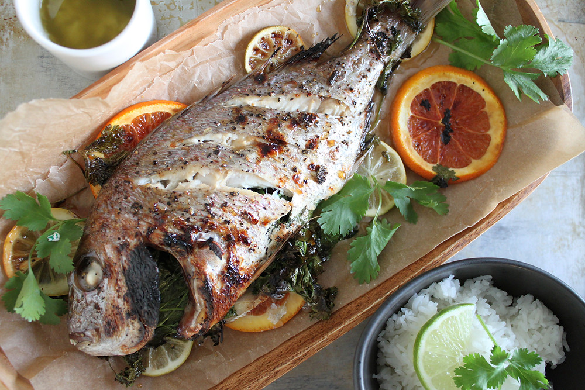

Whole Roasted Snapper With Citrus Vinaigrette

Description
Cooking fish whole is commonplace in the Mediterranean, and roasting easily delivers deep flavor. We found mild
red snapper to be perfectly suited to this technique. Roasting the fish on a rimmer baking sheet allowed
for plenty of air circulation, which gave the snapper a firm, flaky texture; a brief stint in a hot oven helped
the fish stay moist.
Ingredients
- 6 tablespoons extra-virgin olive oil
- 1/4 cup minced fresh cilantro
- 2 teaspoons grated lime zest plus 2 tablespoons juice
- 2 teaspoons grated orange zest plus 2 tablespoons juice
- 1 small shallot minced
- 1/8 teaspoon red pepper flakes
- Salt and pepper
- 2 (1 1/2 to 2-pound) whole red snapper, scaled, gutted, fins snipped off with scissors
Steps
- Adjust oven rack to middle position and heat oven to 500 degrees Farenheit.
Line rimmer baking sheet with parchment paper and grease parchment. Whisk 1/4 cup oil, cilantro,
lime juice, orange juice, shallot, and pepper flakes together in a bowl. Season with
salt and pepper to taste; set asside for serving.
- In seperate bowl, combine lime zest, orange zest, 1 1/2 teaspoons salt, and 1/2 teaspoon pepper.
Rinse each snapper under cold water and pat dry with paper towels inside and out.
Using sharp knife, make 3 or 4 shallow slashes, about 2 inches apart, on both sides of snapper.
Open cavity of each snapper and sprinkle 1 teaspoon salt mixture on flesh.
Brush one tablespoon oil on outside of each snapper and season with reamaining salt mixture; transfer
to prepared sheet and let sit for 10 minutes.
- Roast until snapper until flakes apart when gently prodded with paring knife and registers
140 degrees Farenheit, 15 to 20 minutes. (To check for doneness, peek into slashed flesh or into
through opened bottom area of each fish.)
- Carefully transfer snapper to carving board and let rest for 5 minutes. Fillet snapper by making
vertical cut just behind head from top of fish to belly. Make another cut along top of snapper
from head to tail. Use spatula to lift meat from bones, starting at head end and running spatula
over bones to lift out fillet. Repeat on other side of snapper. Discard head and skeleton. Whisk
dressing to recombine and serve with snapper.